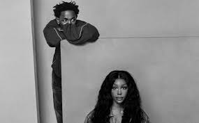

| Not Like Us | Una canción que se ha convertido en un himno del hip-hop.La letra incluye acusaciones de pedofilia contra Drake y su círculo cercano y versos que lo califican de ser un "colonizador" y "mentiroso". Kendrick también aborda la hipocresía y la falsedad en la industria, mencionando cómo algunos artistas buscan validación y credibilidad en lugares como Atlanta, una ciudad conocida por su influencia en el rap. Al mencionar a figuras como Future, Lil Baby y 21 Savage, Kendrick sugiere que algunos artistas se apropian de la cultura y el estilo de vida de Atlanta para ganar relevancia, sin ser auténticos. Esta crítica se extiende a la idea de que estos artistas son 'colonizadores', explotando la cultura para su propio beneficio sin contribuir genuinamente a ella. |
|  | All the Stars | Una canción que ha colaborado con SZA. sugiere una reflexión constante sobre las expectativas versus la realidad en las relaciones y en la vida misma. La frase 'Or do the feeling haunt you?' revela cómo los sentimientos, ya sean de amor o desamor, pueden perseguirnos y afectar profundamente nuestro estado emocional. Es una pieza que combina elementos de introspección, crítica social y aspiraciones personales. La letra inicia con una reflexión sobre el amor, preguntando si este cumple con las expectativas o si, por el contrario, se convierte en una fuente de angustia. Este cuestionamiento sirve como preámbulo para explorar temas más profundos relacionados con la autenticidad y la lucha contra las falsas apariencias. Kendrick Lamar, conocido por su habilidad para entrelazar su narrativa personal con comentarios sociales, utiliza su verso para confrontar a aquellos que se sienten con derecho a juzgar o imponer expectativas. |
| Humble | Una canción que ha sido considerada una de las mejores de Kendrick Lamar. es un llamado poderoso a la humildad en un contexto de éxito y exceso. Lamar, conocido por su habilidad lírica y su enfoque en temas sociales y personales, utiliza esta pista para reflexionar sobre su propia vida y la cultura que lo rodea. La letra comienza con recuerdos de una infancia más humilde, contrastando esos días con su vida actual llena de lujos y excesos. A través de este contraste, Lamar destaca la importancia de recordar de dónde viene uno, incluso en tiempos de abundancia. | |
| DNA | Una canción que ha sido considerada una de las mejores de Kendrick Lamar. es una poderosa exploración de la identidad, la herencia y la lucha personal. A través de un flujo implacable y letras cargadas de significado, Lamar desgrana los elementos que considera forman parte de su ser esencial, tanto los positivos como los negativos. La repetición de 'I got' subraya la aceptación de todas las facetas de su personalidad y experiencia, desde la lealtad y la realeza hasta el dolor y la alegría. | |
| tv off | Una canción que ha colaborado con Lefty Gunplay. es una poderosa declaración de autenticidad y resistencia en un mundo lleno de superficialidades y falsas promesas. Desde el inicio, Lamar expresa su deseo de un "Black Grand National", un símbolo de éxito y poder, rechazando la racionalidad convencional y optando por satisfacer sus propios deseos y necesidades. Esta línea inicial establece el tono de la canción, que se centra en la lucha por la autenticidad y la supervivencia en un entorno hostil. | |
| Wesley's Theory | Wesley's Theory: Una canción de 2015. La canción 'Wesley's Theory' de Kendrick Lamar, con la colaboración de George Clinton y Thundercat, es la pista de apertura de su aclamado álbum 'To Pimp a Butterfly'. Esta obra es una crítica mordaz al sueño americano y cómo este puede ser una trampa para los afroamericanos que alcanzan el éxito. La canción comienza con una muestra de 'Every Nigga is a Star' de Boris Gardiner, estableciendo un tono irónico que contrasta con la realidad de la discriminación y la desigualdad. | |
| Poetic justice | Una canción de 2012 que ha colaborado con Drake. La canción 'Poetic Justice' de Kendrick Lamar, con la colaboración de Drake, es una exploración lírica del amor y la atracción, entrelazada con referencias culturales y un juego de palabras meticuloso. Kendrick utiliza la metáfora de una flor que florece en una habitación oscura para simbolizar un amor o belleza que surge en circunstancias improbables o adversas. La justicia poética, en este contexto, puede interpretarse como un destino romántico que se siente merecido y apropiado, como si estuviera escrito en un poema o una canción. | |
| Cartoon and cereal | Una canción de 2013 que ha colaborado con Gunplay. En 'Cartoons & Cereal', Kendrick Lamar nos lleva a un viaje introspectivo a través de su infancia y las duras realidades de crecer en un entorno violento. La canción comienza con una referencia a los dibujos animados y los cereales, símbolos de la inocencia y la simplicidad de la niñez. Sin embargo, esta imagen se contrapone rápidamente con la violencia y la criminalidad que rodeaban su vida desde una edad temprana. La línea 'You was holding the handgun, she was giving birth' ilustra la yuxtaposición de la vida y la muerte, la inocencia y la corrupción, que define gran parte de su experiencia juvenil. | |
| Rigamortis | Una canción de 2011. Kendrick Lamar utiliza una serie de metáforas y referencias culturales para explorar temas de competencia, mortalidad y la lucha por la supremacía en el mundo del rap. Desde el inicio, Lamar se compara con un dragón, una criatura mítica que simboliza poder y destrucción. Esta imagen se refuerza con la referencia a Marilyn Manson, conocido por su estilo provocador y oscuro, sugiriendo que Lamar está dispuesto a romper con las normas y desafiar a sus competidores de manera implacable. | |
| I | Una canción de 2014. La canción "i" de Kendrick Lamar es un poderoso himno de autoafirmación y resiliencia frente a las adversidades de la vida. La letra comienza con una declaración de haber enfrentado numerosas pruebas y tribulaciones, pero a pesar de ello, Lamar mantiene su fe en Dios y en sí mismo. La referencia a Satanás intentando ponerle un 'bow tie' (corbata de lazo) puede interpretarse como una metáfora de ser tentado por el mal o ser forzado a conformarse a las expectativas de la sociedad. El estribillo, donde Lamar afirma repetidamente que se ama a sí mismo, es un mensaje de empoderamiento y aceptación personal. |